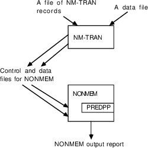
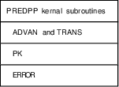
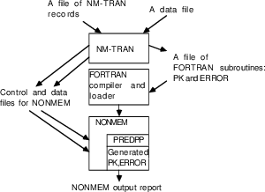

and
and
 described in Chapters 3 and 4. When $PK, $ERROR, or $PRED
records are used, NM-TRAN performs symbolic differentiation
to generate the code needed to compute these derivatives.
This relieves the user of a major burden.
described in Chapters 3 and 4. When $PK, $ERROR, or $PRED
records are used, NM-TRAN performs symbolic differentiation
to generate the code needed to compute these derivatives.
This relieves the user of a major burden.Chapter 1 - Introduction to NONMEM, PREDPP, and NM-TRAN
This chapter introduces a computer program called NONMEM. It also introduces two programs that are distributed with NONMEM and make it easier to use: PREDPP and NM-TRAN. The scope of this text itself is described, and suggestions are made for reading it. A somewhat detailed technical description of the components of NONMEM is then given. The final section is a list of additional references.
NONMEM stands for "Nonlinear Mixed Effects Model." NONMEM is a computer program, written in FORTRAN 90/95, designed to fit general statistical (nonlinear) regression-type models to data.
NONMEM was developed by
the NONMEM Project Group at the University of California at
San Francisco for analyzing population pharmacokinetic data
in particular.†
----------
† NONMEM
versions up through VI are the property of the Regents of
the University of California, but ICON Development Solutions
has exclusive rights to license their use. NONMEM 7 is the
current version of the software and is the property of ICON
Development Solutions.
----------
These are data typically collected from clinical studies of pharmaceutic agents, involving the administration of a drug to individuals and the subsequent observation of drug levels (most often in the blood plasma). Proper modeling of these data involves accounting for both unexplainable inter- and intra-subject effects (random effects), as well as measured concomitant effects (fixed effects). NONMEM allows this mixed effect modeling. Such modeling is especially useful when there are only a few pharmacokinetic measurements from each individual sampled in the population, or when the data collection design varies considerably between these individuals. However, NONMEM is a general program which can be used to fit models to a wide variety of data.
Like many nonlinear regression programs, NONMEM does not have any "built in" models (such as the linear model) with which it can compute a predicted value given the current values of the regression parameters. Instead, NONMEM calls a subroutine having entry name PRED ("prediction") to obtain a predicted value. PRED also must compute for NONMEM partial derivatives with respect to certain random variables. Depending on the model and the kinds of doses, PRED may be very simple or may be very complicated. A user can write his own PRED subroutine. This can be as simple or complicated as is necessary, and may involve calls to its own subprograms.
PREDPP stands for "PRED for Population Pharmacokinetics". It is a PRED subroutine for use with NONMEM and is the second major component distributed with NONMEM. Whereas NONMEM is a general nonlinear regression tool, PREDPP is specialized to the kinds of predictions which arise in pharmacokinetic data analysis. It can compute predictions according to many different pharmacokinetic models, according to a great variety of dosing regimens. Almost all the examples in this guide use PREDPP.
NM-TRAN stands for "NONMEM Translator". It is the third major component distributed with NONMEM. It is a separate, "stand-alone" control language translator and data preprocessor. When NM-TRAN is used, a NONMEM run includes two separate steps: first the NM-TRAN step, in which a file of NM-TRAN records (which begin with "$") are translated into several NONMEM input files, and second the NONMEM step itself. All the examples in this guide use NM-TRAN. We strongly recommend its use.
Note that neither NM-TRAN nor NONMEM-PREDPP run interactively. Files of commands and data are created by means of (say) the operating system editor. Then NM-TRAN and NONMEM are executed, using these files as input. Figure 1.1 shows the relationship between NONMEM, PREDPP, and NM-TRAN.

Fig 1.1. NONMEM, PREDPP, and NM-TRAN. A user-written PRED subroutine could be included instead of PREDPP.
This Guide is intended to
be read by new users of NONMEM-PREDPP. Typically, such users
have pharmacokinetic data, either from a population or from
a single individual†,
----------
† The terms
"population" and "single individual" are
used in this guide. NM-TRAN and NONMEM outputs refer to
POPULATION and SINGLE-SUBJECT data and analysis.
----------
to be fit to a standard pharmacokinetic model (e.g., a one or two compartment linear mammillary model). However, new users with nonstandard models, or with pharmacokinetic/pharmacodynamic data, may also find this guide helpful.
It is assumed that NONMEM and its components are already installed on the user’s computer and that the user wants to learn to use them as quickly as possible. This guide does not tell how to perform the installation or how to run an installed NONMEM under a particular operating system; the new user will have to ask experienced users what the local commands are. However, someone who is installing NONMEM at a new site may find it useful to review this guide to get a quick overview of NONMEM, its component programs, its inputs, and its outputs.
This guide is not a text book in pharmacokinetics or statistics. Readers should be familiar with basic concepts in pharmacokinetics and statistical data analysis. We also assume a very basic familiarity with FORTRAN.
Chapter 2 contains two examples of the use of NONMEM. The first presents data from a single individual; estimates are obtained of his pharmacokinetic parameters. The second presents data from a group of individuals; estimates are obtained of the pharmacokinetic parameters of the population which this group represents. The examples serve to introduce NONMEM notation, input and output, and to provide an idea of what is possible using the system.
Chapter 3 presents the notation and definitions we will use to discuss models for individual data. The relationship of these models to data is discussed, and the distinction between so-called fixed effects and random effects is made.
Chapter 4 extends this discussion to models for population data.
Chapter 5 discusses NONMEM’s fitting criterion, the parameter estimates obtained by using this criterion, and the standard errors of these estimates. It then discusses how to do hypothesis tests with NONMEM.
Chapter 6 tells how to create data files for NONMEM-PREDPP and how to describe them using the $DATA and $INPUT records of NM-TRAN. It also discusses the Data Preprocessor feature of NM-TRAN.
Chapter 7 tells how to use NM-TRAN to write simple $SUBROUTINE records for PREDPP, how to write $PK records for individual data, and how to write $PK records for population data.
Chapter 8 tells how to write simple $ERROR records for PREDPP. Chapters 7 and 8 are meant to be read in parallel with Chapters 3 and 4.
Chapter 9 tells how to use NM-TRAN to specify the remaining choices for an analysis. It tells how to assign initial values to parameters ($THETA, $OMEGA, $SIGMA records), how to specify what analysis tasks to perform ($ESTIMATION, $COVARIANCE records), and how to specify certain additional output ($TABLE, $SCATTERPLOT records).
Chapter 10 describes NONMEM’s output in detail.
Chapter 11 outlines the process of model building, showing how a simple model can be made more complex to better fit the data.
Chapter 12 briefly describes a variety of features of PREDPP and NONMEM that are somewhat advanced for this text but are of interest to most users of NONMEM. References are given to other documents in which additional information can be found.
Chapter 13 discusses errors that can occur during a NONMEM run.
Appendix 1 describes PREDPP’s most commonly used pharmacokinetic models (ADVAN subroutines).
Appendix 2 describes alternative parameterizations (TRANS subroutines) for these models.
Appendix 3 is a list of NM-TRAN records.
Readers who are completely new to NONMEM should read this guide starting with Chapter 2; the examples presented are used again in the later chapters. Chapters 2-5 are theoretical in nature. Chapters 6-12 describe the details of building the input for NONMEM-PREDPP and interpreting the output. Readers who have non-pharmacokinetic data to fit can skip (or skim) Chapters 3, 4, 7, and 8. Readers who already have some familiarity with certain topics (e.g., who have used other nonlinear analysis programs to analyze data) can concentrate on the chapters of interest to them. We strongly recommend that all users "graduate" to the more thorough NONMEM documentation listed in Section 4 of this chapter.
Throughout the guide,
examples are given of NM-TRAN records. These examples appear
in boldface:
$THETA .01
Examples are also given of (fragments) of input data files.
They appear as follows:
ID AMT TIME DV
2 320. 0. 0.
2 0. .27 1.71
Alphabetic characters such as ID, AMT, etc., are shown for
descriptive purposes. They are not part of the actual
data file.
In this section we discuss the components of NONMEM in some detail. First-time readers may prefer to skip this section and go directly to Chapter 2, which gives an example of a NONMEM run, and return to this section later (if at all).
NONMEM is written (almost) entirely in ANSI FORTRAN 90/95. It is distributed on CD-ROM as FORTRAN source code, some of which is encrypted. It can be compiled and run on any computer which has a FORTRAN 90/95 compiler and sufficient memory and speed to run a large, computationally intensive program.
NONMEM consists of a main program and many subroutines, all of which are required for each NONMEM run. As discussed above, one subroutine, PRED, is not included in NONMEM itself.
PREDPP is not a single subroutine. It is a collection of FORTRAN subroutines. Some of these are always needed but must be supplied by the user himself (see PK and ERROR below). Others are always needed and are supplied; these are called the kernel routines. Others (subroutines ADVAN and TRANS, for example) are also always needed, and are supplied, but are chosen from different versions corresponding to different pharmacokinetic models. The collection of supplied routines constitutes the PREDPP Library.
Two very important subroutines of PREDPP are called PK and ERROR. PK computes the values of the population or individual pharmacokinetic parameters (e.g., CL and V) of a given model and accounts for the "differences" between individual and population values. ERROR accounts for the "differences" between predicted and observed values. These two subroutines are where the basic task of modelling is carried out; this task is the user’s responsibility. Chapters 7 and 8 are devoted to a description of these subroutines.
Figure 1.2 shows the major components of PREDPP.

Figure 1.2. Components of PREDPP. ADVAN and TRANS are chosen from the PREDPP library. PK and ERROR are user-supplied.
Whether PREDPP is used or a special purpose PRED subroutine is written, the PRED subroutine must be combined ("linked") with NONMEM; this process (which is sometimes is called "link editing" or "loading") must take place before the actual NONMEM run. The NONMEM-PRED combination is generally called a "load module" or "executable module". Compiling and linking are processes which are operating system dependent; each installation must supply its own commands and procedures for these tasks. They may be done before the NM-TRAN step or between it and the NONMEM step. This choice is discussed in Section 3.7 below. For certain platforms, a front-end interface provided by the NONMEM Project Group (nmfe74.bat for MS/DOS; nmfe74 C-shell script for Unix-type) can be used to perform these steps, and can create all both types of load modules described below: generated subroutines and user-written subroutines.
NM-TRAN provides the following services: control language translation, model specification via FORTRAN-like statements (called abbreviated code), partial differentiation, and preprocessing of the data. They are discussed separately.
NM-TRAN includes a language for communicating control information to NONMEM. NM-TRAN records are free-form (i.e., spacing between options within a record and the order of the records and their options is flexible) and use English words (or their abbreviations) for options. For example, the record name $ESTIMATION may be abbreviated to $EST; the option name SIGDIGITS may be abbreviated to SIG. Either spaces or commas may be used to separate options. Defaults are understood for most options, allowing the records to be relatively compact. Considerable error checking is performed by NM-TRAN. This reduces the number and severity of the errors that can occur during the NONMEM run. NM-TRAN also produces messages that warn the user of possible errors in the data and/or control stream.
NM-TRAN translates a file of NM-TRAN control records into NONMEM control records, which use a fixed-field, predominately numerical control language.
With PREDPP, FORTRAN subroutines PK and ERROR are needed to specify parts of the pharmacostatistical model. In most cases, these specifications can be directly expressed within NM-TRAN records $PK and $ERROR, using FORTRAN-like assignment and conditional statements called abbreviated code. These statements are implemented by NM-TRAN as complete FORTRAN subroutines in file FSUBS, incorporating the abbreviated code. An intermediate step between the NM-TRAN and NONMEM steps is needed to compile these subroutines and link them with NONMEM-PREDPP.
The message "Recompiling certain components" will be displayed at the console at this step.
Figure 1.3 shows how the compile and link step relates to the two steps of Figure 1.1.

Figure 1.3. Building a NONMEM load module with generated FORTRAN subroutines. An intermediate step is placed between the two steps of Figure 1.1.
If the user supplies complete PK and ERROR subroutines (i.e., $PK and $ERROR records are not used), then the NONMEM load module can be built at any time.
Note that even when PREDPP is not used, the same options exist. For example, if the desired model can be expressed via a $PRED record, then NM-TRAN will generate a complete PRED subroutine. However, whereas NM-TRAN’s FORTRAN-like syntax is sufficient for most purposes of writing PK and ERROR subroutines, it is not sufficient for writing any but the simplest of PRED subroutines.
NONMEM requires that PRED
(whether PREDPP or user-written) compute more than just
predicted values. It must also compute certain partial
derivatives with respect to the random variables
and
described in Chapters 3 and 4. When $PK, $ERROR, or $PRED
records are used, NM-TRAN performs symbolic differentiation
to generate the code needed to compute these derivatives.
This relieves the user of a major burden.
NM-TRAN includes a Data Preprocessor program which allows the user greater flexibility in constructing his data file than is allowed in a data file input directly into NONMEM. This is discussed in Chapter 6.
More information can be found in the other parts of the NONMEM Users Guide, all of which may be found as pdf files on the NONMEM distribution medium.
|
Part I - Users Basic Guide |
A thorough, step by step discussion of the various features and some of the statistical concepts involved in using NONMEM, including many examples.
|
Part II - Users Supplemental Guide |
A continuation of Part I which includes advanced features of NONMEM.
|
Part III - NONMEM Installation Guide |
A guide for installing NONMEM, PREDPP, and NM-TRAN.
|
Part IV - NM-TRAN Guide |
A complete reference guide to NM-TRAN and the Data Preprocessor.
|
Part V - Introductory Guide |
The present document.
|
Part VI - PREDPP Guide |
A complete reference guide to PREDPP.
|
Part VII - Conditional Estimation Methods |
A description of these methods and some guidelines for their use.
|
Part VIII - Help Guide |
A fast way to locate information on a given word or topic. The content of the Help Guide is also supplied on the NONMEM distribution medium as both text files ("on-line help") and html files for on-line searching.
|
NONMEM V Supplemental Guide |
Describes new features of NONMEM V.
|
Introduction to Version VI |
Describes new features of NONMEM VI.
|
Introduction to NONMEM 7.4.0 |
Describes new features of NONMEM 7.1, 7.2, 7.3, and 7.4
|
NONMEM7_Technical_Guide |
Technical Guide on the Expectation-Maximization Population Analysis Methods in the NONMEM 7 Program. New with NONMEM 7.2; revised for NONMEM 7.3 and for NONMEM 7.4
|
useful_variables |
New with NONMEM 7.3; revised for NONMEM 7.4 A description of variables that are available via the NM-TRAN include file util\nonmem_general_reserved.